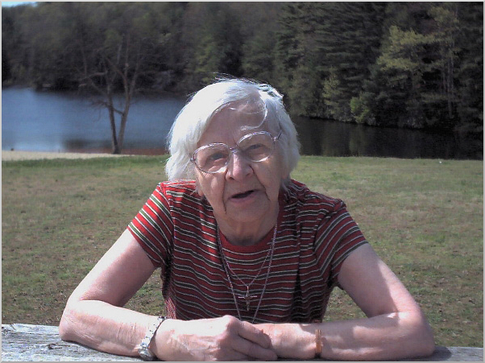

Remembering Ivy Newton
EULOGY FOR IVY NEWTON
(Also known as Ivy Scheit)
MARCH 11th, 2009
Father Bruce Lamb
Parish of St. Michael & All Angels
Peel Green, Eccles, Manchester, UK
Give thanks for her birth here in Eccles in Lane End, and for her working life in her younger years at Bradburn's the Bakers. Then for her work during the Second World War at Turner's Bandage Works in Trafford Park,
and in the Land Army on a farm in North Wales. After the Second World War, she had a variety of jobs in 'locks and clocks' in the United States of America, as a Dinner Lady, doing Bar work at the Talk of the North, as a cleaner, and at Butlins in Pwllheli.

During the Second World War she met her future husband Theodore, a German Prisoner of War, and showed great courage travelling on her own by ship after the War to America to meet him and subsequently to marry and settle there for fifteen years.
After his death forty-six years ago in 1963, she returned to England with her young family, Sandra and Frederick, had two grandchildren Andrew and Kay, and one great-grandchild.
So give thanks for her family life and especially the care and support she received at home over many years from Frederick.
Give thanks for the pleasure she gained from reading and knitting and from her interest in horoscopes, and from two recent holidays in Florida. On the second of these, she had a fall which led to a loss of confidence and confined her to the house.
And although in the end she died quite suddenly, give thanks that she was spared prolonged suffering and pray above all that she may now rest and remain in peace.
|
|